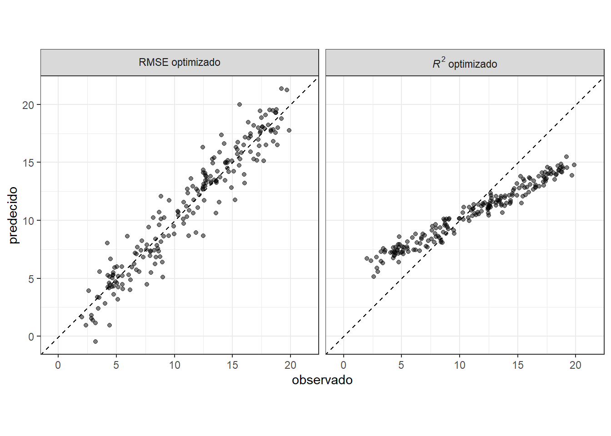
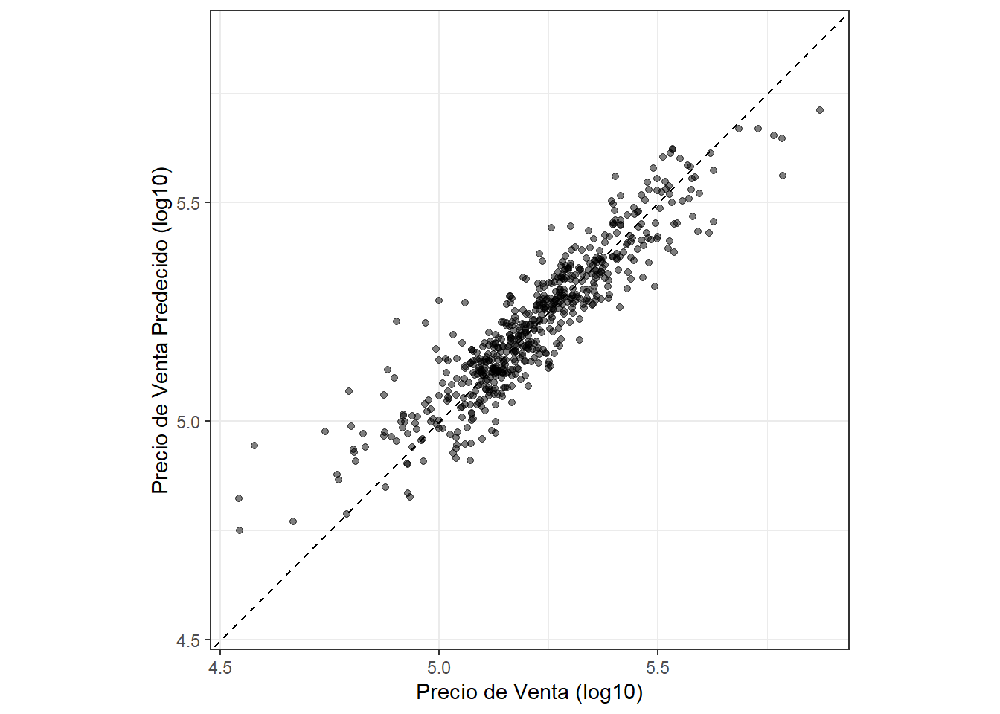
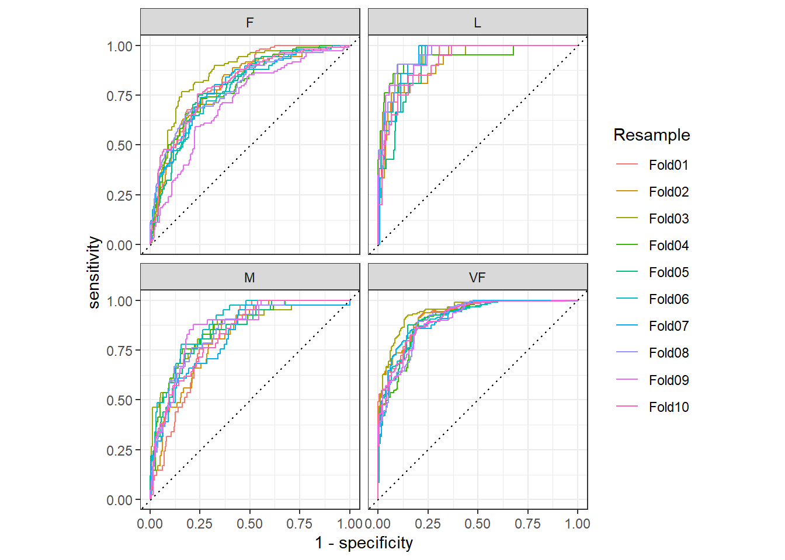

9 Juzgar la Eficacia del Modelo
Una vez que tenemos un modelo, necesitamos saber qué tan bien funciona. Un enfoque cuantitativo para estimar la efectividad nos permite comprender el modelo, comparar diferentes modelos o modificar el modelo para mejorar el rendimiento. Nuestro enfoque en tidymodels está en la validación empírica; Esto generalmente significa usar datos que no se usaron para crear el modelo como sustrato para medir la efectividad.
El mejor enfoque para la validación empírica implica el uso de métodos de resampling que se presentarán en el Capítulo 10. En este capítulo, motivaremos la necesidad de una validación empírica mediante el uso del conjunto de pruebas. Tenga en cuenta que el conjunto de prueba solo se puede utilizar una vez, como se explica en Sección 5.1.
Al juzgar la eficacia del modelo, su decisión sobre qué métricas examinar puede ser fundamental. En capítulos posteriores, se optimizarán empíricamente ciertos parámetros del modelo y se utilizará una métrica de rendimiento primaria para elegir el mejor submodelo. Elegir la métrica incorrecta puede fácilmente tener consecuencias no deseadas. Por ejemplo, dos métricas comunes para los modelos de regresión son la raíz del error cuadrático medio (RMSE) y el coeficiente de determinación (también conocido como \(R^2\)). El primero mide la precisión mientras que el segundo mide la correlación. Estos no son necesariamente lo mismo. ?fig-Performance-reg-metrics demuestra la diferencia entre los dos.
Un modelo optimizado para RMSE tiene más variabilidad pero tiene una precisión relativamente uniforme en todo el rango del resultado. El panel derecho muestra que existe una correlación más estrecha entre los valores observados y predichos, pero este modelo funciona mal en las colas.
Este capítulo demostrará el paquete yardstick, un paquete central de tidymodels cuyo objetivo es medir el rendimiento del modelo. Antes de ilustrar la sintaxis, exploremos si vale la pena la validación empírica mediante métricas de rendimiento cuando un modelo se centra en la inferencia en lugar de la predicción.
9.1 Métricas de rendimiento e inferencia
La eficacia de cualquier modelo depende de cómo se utilizará. Un modelo inferencial se utiliza principalmente para comprender las relaciones y normalmente enfatiza la elección (y validez) de distribuciones probabilísticas y otras cualidades generativas que definen el modelo. Por el contrario, para un modelo utilizado principalmente para la predicción, la fuerza predictiva es de primordial importancia y otras preocupaciones sobre las cualidades estadísticas subyacentes pueden ser menos importantes. La fuerza predictiva generalmente está determinada por qué tan cerca están nuestras predicciones de los datos observados, es decir, la fidelidad de las predicciones del modelo a los resultados reales. Este capítulo se centra en funciones que se pueden utilizar para medir la fuerza predictiva. Sin embargo, nuestro consejo para quienes desarrollan modelos inferenciales es utilizar estas técnicas incluso cuando el modelo no se utilizará con el objetivo principal de predicción.
Un problema de larga data con la práctica de la estadística inferencial es que, centrándose exclusivamente en la inferencia, es difícil evaluar la credibilidad de un modelo. Por ejemplo, considere los datos sobre la enfermedad de Alzheimer de Craig–Schapiro et al. (2011) cuando se estudiaron pacientes con 333 para determinar los factores que influyen en el deterioro cognitivo. Un análisis podría tomar los factores de riesgo conocidos y construir un modelo de regresión logística donde el resultado sea binario (deteriorado/no deteriorado). Consideremos los predictores de edad, sexo y genotipo de apolipoproteína E. Esta última es una variable categórica con las seis combinaciones posibles de las tres variantes principales de este gen. Se sabe que la apolipoproteína E tiene una asociación con la demencia (Jungsu, Basak, y Holtzman 2009).
Un enfoque superficial, pero no infrecuente, para este análisis sería ajustar un modelo grande con efectos e interacciones principales y luego utilizar pruebas estadísticas para encontrar el conjunto mínimo de términos del modelo que sean estadísticamente significativos en algún nivel predefinido. Si se utilizara un modelo completo con los tres factores y sus interacciones de dos y tres vías, una fase inicial sería probar las interacciones utilizando pruebas de índice de probabilidad secuencial (Hosmer y Lemeshow 2000). Analicemos este tipo de enfoque para el ejemplo de datos sobre la enfermedad de Alzheimer:
Al comparar el modelo con todas las interacciones de dos vías con uno con la interacción de tres vías adicional, las pruebas de razón de verosimilitud producen un valor p de 0.888. Esto implica que no hay evidencia de que los términos del modelo adicionales four asociados con la interacción de tres vías expliquen suficiente variación en los datos para mantenerlos en el modelo.
A continuación, las interacciones bidireccionales se evalúan de manera similar con respecto al modelo sin interacciones. El valor p aquí es 0.0382. Esto es algo dudoso, pero, dado el pequeño tamaño de la muestra, sería prudente concluir que hay evidencia de que algunas de las posibles interacciones bidireccionales 10 son importantes para la modelo.
A partir de aquí, construiríamos alguna explicación de los resultados. Sería particularmente importante discutir las interacciones, ya que pueden generar hipótesis fisiológicas o neurológicas interesantes que se explorarán más a fondo.
Si bien superficial, esta estrategia de análisis es común tanto en la práctica como en la literatura. Esto es especialmente cierto si el profesional tiene una formación formal limitada en análisis de datos.
Un dato que falta en este enfoque es qué tan cerca se ajusta este modelo a los datos reales. Usando métodos de remuestreo, discutidos en el Capítulo 10, podemos estimar que la precisión de este modelo es aproximadamente 73%. La precisión es a menudo una mala medida del rendimiento del modelo; Lo usamos aquí porque se entiende comúnmente. Si el modelo tiene 73% de fidelidad a los datos, ¿deberíamos confiar en las conclusiones que produce? Podríamos pensar así hasta que nos demos cuenta de que la tasa inicial de pacientes no deteriorados en los datos es 72.7%. Esto significa que, a pesar de nuestro análisis estadístico, el modelo de dos factores parece ser sólo 0.3% mejor que una simple heurística que siempre predice que los pacientes no sufrirán daños, independientemente de los datos observados.
El objetivo de este análisis es demostrar la idea de que la optimización de las características estadísticas del modelo no implica que el modelo se ajuste bien a los datos. Incluso para modelos puramente inferenciales, alguna medida de fidelidad a los datos debería acompañar a los resultados inferenciales. Con esto, los consumidores de los análisis pueden calibrar sus expectativas sobre los resultados.
En el resto de este capítulo, discutiremos enfoques generales para evaluar modelos mediante validación empírica. Estos enfoques se agrupan según la naturaleza de los datos de resultados: puramente numéricos, clases binarias y tres o más niveles de clase.
9.2 Métricas de regresión
Recuerde de Sección 6.3 que las funciones de predicción de tidymodels producen tibbles con columnas para los valores predichos. Estas columnas tienen nombres consistentes y las funciones en el paquete yardstick que producen métricas de rendimiento tienen interfaces consistentes. Las funciones están basadas en marcos de datos, a diferencia de vectores, con la sintaxis general de:
function(data, truth, ...)donde data es un marco de datos o tibble y truth es la columna con los valores de resultados observados. Las elipses u otros argumentos se utilizan para especificar las columnas que contienen las predicciones.
Para ilustrar, tomemos el modelo de Sección 8.8. Este modelo lm_wflow_fit combina un modelo de regresión lineal con un conjunto de predictores complementado con una interacción y funciones spline para longitud y latitud. Fue creado a partir de un conjunto de entrenamiento (llamado ames_train). Aunque no recomendamos utilizar el conjunto de pruebas en este punto del proceso de modelado, se utilizará aquí para ilustrar la funcionalidad y la sintaxis. El marco de datos ames_test consta de las propiedades 588. Para empezar, hagamos predicciones:
ames_test_res <- predict(lm_fit, new_data = ames_test %>% select(-Sale_Price))
ames_test_res
## # A tibble: 588 × 1
## .pred
## <dbl>
## 1 5.07
## 2 5.31
## 3 5.28
## 4 5.33
## 5 5.30
## 6 5.24
## # ℹ 582 more rowsEl resultado numérico previsto por el modelo de regresión se denomina .pred. Hagamos coincidir los valores predichos con sus correspondientes valores de resultado observados:
ames_test_res <- bind_cols(ames_test_res, ames_test %>% select(Sale_Price))
ames_test_res
## # A tibble: 588 × 2
## .pred Sale_Price
## <dbl> <dbl>
## 1 5.07 5.02
## 2 5.31 5.39
## 3 5.28 5.28
## 4 5.33 5.28
## 5 5.30 5.28
## 6 5.24 5.26
## # ℹ 582 more rowsVemos que estos valores en su mayoría parecen cercanos, pero aún no tenemos una comprensión cuantitativa de cómo funciona el modelo porque no hemos calculado ninguna métrica de rendimiento. Tenga en cuenta que tanto los resultados previstos como los observados están en unidades log-10. Es una buena práctica analizar las predicciones en la escala transformada (si se usara una), incluso si las predicciones se informan utilizando las unidades originales.
Trazamos los datos en Figura 9.2 antes de calcular las métricas:
ggplot(ames_test_res, aes(x = Sale_Price, y = .pred)) +
# Crear una línea diagonal:
geom_abline(lty = 2) +
geom_point(alpha = 0.5) +
labs(y = "Precio de Venta Predecido (log10)", x = "Precio de Venta (log10)") +
# Escale y dimensione los ejes x e y de manera uniforme:
coord_obs_pred()
Hay una propiedad de bajo precio que está sustancialmente sobreestimada, es decir, bastante por encima de la línea discontinua.
Calculemos la raíz del error cuadrático medio para este modelo usando la función rmse():
rmse(ames_test_res, truth = Sale_Price, estimate = .pred)
## # A tibble: 1 × 3
## .metric .estimator .estimate
## <chr> <chr> <dbl>
## 1 rmse standard 0.0736Esto nos muestra el formato estándar de salida de las funciones yardstick. Las métricas para resultados numéricos suelen tener un valor “estándar” para la columna .estimator. En las siguientes secciones se muestran ejemplos con diferentes valores para esta columna.
Para calcular varias métricas a la vez, podemos crear un conjunto de métricas. Sumemos \(R^2\) y el error absoluto medio:
ames_metrics <- metric_set(rmse, rsq, mae)
ames_metrics(ames_test_res, truth = Sale_Price, estimate = .pred)
## # A tibble: 3 × 3
## .metric .estimator .estimate
## <chr> <chr> <dbl>
## 1 rmse standard 0.0736
## 2 rsq standard 0.836
## 3 mae standard 0.0549Este formato de datos ordenado apila las métricas verticalmente. Las métricas del error cuadrático medio y del error absoluto medio están en la escala del resultado (por lo tanto, log10(Sale_Price) para nuestro ejemplo) y miden la diferencia entre los valores previstos y observados. El valor de \(R^2\) mide la correlación al cuadrado entre los valores previstos y observados, por lo que los valores más cercanos a uno son mejores.
El paquete yardstick no contiene una función para \(R^2\) ajustado. Esta modificación del coeficiente de determinación se utiliza comúnmente cuando los mismos datos utilizados para ajustar el modelo se utilizan para evaluar el modelo. Esta métrica no es totalmente compatible con tidymodels porque siempre es un mejor enfoque para calcular el rendimiento en un conjunto de datos separado que el utilizado para ajustar el modelo.
9.3 Métricas de clasificación binaria
Para ilustrar otras formas de medir el rendimiento del modelo, cambiaremos a un ejemplo diferente. El paquete modeldata (otro de los paquetes tidymodels) contiene predicciones de ejemplo de un conjunto de datos de prueba con dos clases (“Class1” y “Class2”):
data(two_class_example)
tibble(two_class_example)
## # A tibble: 500 × 4
## truth Class1 Class2 predicted
## <fct> <dbl> <dbl> <fct>
## 1 Class2 0.00359 0.996 Class2
## 2 Class1 0.679 0.321 Class1
## 3 Class2 0.111 0.889 Class2
## 4 Class1 0.735 0.265 Class1
## 5 Class2 0.0162 0.984 Class2
## 6 Class1 0.999 0.000725 Class1
## # ℹ 494 more rowsLa segunda y tercera columnas son las probabilidades de clase predichas para el conjunto de prueba, mientras que predicted son las predicciones discretas.
Para las predicciones de clases difíciles, una variedad de funciones yardstick son útiles:
# Una matriz de confusión:
conf_mat(two_class_example, truth = truth, estimate = predicted)
## Truth
## Prediction Class1 Class2
## Class1 227 50
## Class2 31 192
# Exactitud:
accuracy(two_class_example, truth, predicted)
## # A tibble: 1 × 3
## .metric .estimator .estimate
## <chr> <chr> <dbl>
## 1 accuracy binary 0.838
# Coeficiente de correlación de Matthews:
mcc(two_class_example, truth, predicted)
## # A tibble: 1 × 3
## .metric .estimator .estimate
## <chr> <chr> <dbl>
## 1 mcc binary 0.677
# Métrica F1:
f_meas(two_class_example, truth, predicted)
## # A tibble: 1 × 3
## .metric .estimator .estimate
## <chr> <chr> <dbl>
## 1 f_meas binary 0.849
# Combinando estas tres métricas de clasificación juntas
classification_metrics <- metric_set(accuracy, mcc, f_meas)
classification_metrics(two_class_example, truth = truth, estimate = predicted)
## # A tibble: 3 × 3
## .metric .estimator .estimate
## <chr> <chr> <dbl>
## 1 accuracy binary 0.838
## 2 mcc binary 0.677
## 3 f_meas binary 0.849El coeficiente de correlación de Matthews y la puntuación F1 resumen la matriz de confusión, pero en comparación con mcc(), que mide la calidad de ejemplos tanto positivos como negativos, la métrica f_meas() enfatiza la clase positiva, es decir, el evento de interés. Para conjuntos de datos de clasificación binaria como este ejemplo, las funciones yardstick tienen un argumento estándar llamado event_level para distinguir los niveles positivos y negativos. El valor predeterminado (que utilizamos en este código) es que el primer nivel del factor de resultado es el evento de interés.
Existe cierta heterogeneidad en las funciones R a este respecto; algunos utilizan el primer nivel y otros el segundo para denotar el evento de interés. Consideramos más intuitivo que el primer nivel es el más importante. La lógica de segundo nivel surge de codificar el resultado como 0/1 (en cuyo caso el segundo valor es el evento) y desafortunadamente permanece en algunos paquetes. Sin embargo, tidymodels (junto con muchos otros paquetes de R) requieren que se codifique un resultado categórico como factor y, por esta razón, la justificación heredada para el segundo nivel como evento se vuelve irrelevante.
Como ejemplo donde el segundo nivel es el evento:
f_meas(two_class_example, truth, predicted, event_level = "second")
## # A tibble: 1 × 3
## .metric .estimator .estimate
## <chr> <chr> <dbl>
## 1 f_meas binary 0.826En este resultado, el valor .estimator de “binario” indica que se utilizará la fórmula estándar para clases binarias.
Existen numerosas métricas de clasificación que utilizan las probabilidades predichas como entradas en lugar de las predicciones de clase estrictas. Por ejemplo, la curva de características operativas del receptor (ROC) calcula la sensibilidad y la especificidad sobre un continuo de diferentes umbrales de eventos. La columna de clase prevista no se utiliza. Hay dos funciones yardstick para este método: roc_curve() calcula los puntos de datos que forman la curva ROC y roc_auc() calcula el área bajo la curva.
Las interfaces para estos tipos de funciones métricas utilizan el marcador de posición del argumento ... para pasar la columna de probabilidad de clase apropiada. Para problemas de dos clases, la columna de probabilidad del evento de interés se pasa a la función:
two_class_curve <- roc_curve(two_class_example, truth, Class1)
two_class_curve
## # A tibble: 502 × 3
## .threshold specificity sensitivity
## <dbl> <dbl> <dbl>
## 1 -Inf 0 1
## 2 1.79e-7 0 1
## 3 4.50e-6 0.00413 1
## 4 5.81e-6 0.00826 1
## 5 5.92e-6 0.0124 1
## 6 1.22e-5 0.0165 1
## # ℹ 496 more rows
roc_auc(two_class_example, truth, Class1)
## # A tibble: 1 × 3
## .metric .estimator .estimate
## <chr> <chr> <dbl>
## 1 roc_auc binary 0.939El objeto two_class_curve se puede usar en una llamada ggplot para visualizar la curva, como se muestra en Figura 9.3. Existe un método autoplot() que se encargará de los detalles:
autoplot(two_class_curve)
Si la curva estuviera cerca de la línea diagonal, entonces las predicciones del modelo no serían mejores que las conjeturas aleatorias. Dado que la curva está arriba en la esquina superior izquierda, vemos que nuestro modelo funciona bien en diferentes umbrales.
Hay otras funciones que utilizan estimaciones de probabilidad, incluidas gain_curve(), lift_curve() y pr_curve().
9.4 Métricas de Clasificación Multiclase
¿Qué pasa con los datos con tres o más clases? Para demostrarlo, exploremos un conjunto de datos de ejemplo diferente que tiene cuatro clases:
data(hpc_cv)
tibble(hpc_cv)
## # A tibble: 3,467 × 7
## obs pred VF F M L Resample
## <fct> <fct> <dbl> <dbl> <dbl> <dbl> <chr>
## 1 VF VF 0.914 0.0779 0.00848 0.0000199 Fold01
## 2 VF VF 0.938 0.0571 0.00482 0.0000101 Fold01
## 3 VF VF 0.947 0.0495 0.00316 0.00000500 Fold01
## 4 VF VF 0.929 0.0653 0.00579 0.0000156 Fold01
## 5 VF VF 0.942 0.0543 0.00381 0.00000729 Fold01
## 6 VF VF 0.951 0.0462 0.00272 0.00000384 Fold01
## # ℹ 3,461 more rowsComo antes, hay factores para los resultados observados y previstos junto con otras cuatro columnas de probabilidades previstas para cada clase. (Estos datos también incluyen una columna Resample. Estos resultados hpc_cv son para predicciones fuera de muestra asociadas con una validación cruzada de 10 veces. Por el momento, esta columna se ignorará y discutiremos el remuestreo en profundidad en Capítulo 10.)
Las funciones para las métricas que utilizan predicciones de clases discretas son idénticas a sus contrapartes binarias:
accuracy(hpc_cv, obs, pred)
## # A tibble: 1 × 3
## .metric .estimator .estimate
## <chr> <chr> <dbl>
## 1 accuracy multiclass 0.709
mcc(hpc_cv, obs, pred)
## # A tibble: 1 × 3
## .metric .estimator .estimate
## <chr> <chr> <dbl>
## 1 mcc multiclass 0.515Tenga en cuenta que, en estos resultados, aparece un .estimator “multiclase”. Al igual que “binario”, esto indica que se utilizó la fórmula para resultados con tres o más niveles de clase. El coeficiente de correlación de Matthews se diseñó originalmente para dos clases, pero se ha extendido a casos con más niveles de clase.
Existen métodos para tomar métricas diseñadas para manejar resultados con solo dos clases y extenderlas para resultados con más de dos clases. Por ejemplo, una métrica como la sensibilidad mide la tasa de verdaderos positivos que, por definición, es específica de dos clases (es decir, “evento” y “no evento”). ¿Cómo se puede utilizar esta métrica en nuestros datos de ejemplo?
Existen métodos contenedores que se pueden utilizar para aplicar sensibilidad a nuestro resultado de cuatro clases. Estas opciones son promedio macro, promedio macroponderado y micropromedio:
El promedio macro calcula un conjunto de métricas de uno contra todos utilizando las estadísticas estándar de dos clases. Estos están promediados.
El promedio macroponderado hace lo mismo, pero el promedio se pondera según el número de muestras de cada clase.
El micropromedio calcula la contribución de cada clase, las agrega y luego calcula una única métrica a partir de los agregados.
Consulte Wu y Zhou (2017) y Opitz y Burst (2019) para obtener más información sobre cómo ampliar las métricas de clasificación a resultados con más de dos clases.
Usando la sensibilidad como ejemplo, el cálculo habitual de dos clases es la relación entre el número de eventos predichos correctamente dividido por el número de eventos verdaderos. Los cálculos manuales para estos métodos de promediación son:
class_totals <-
count(hpc_cv, obs, name = "totals") %>%
mutate(class_wts = totals / sum(totals))
class_totals
## obs totals class_wts
## 1 VF 1769 0.51024
## 2 F 1078 0.31093
## 3 M 412 0.11883
## 4 L 208 0.05999
cell_counts <-
hpc_cv %>%
group_by(obs, pred) %>%
count() %>%
ungroup()
# Calcule las cuatro sensibilidades usando 1 contra todos
one_versus_all <-
cell_counts %>%
filter(obs == pred) %>%
full_join(class_totals, by = "obs") %>%
mutate(sens = n / totals)
one_versus_all
## # A tibble: 4 × 6
## obs pred n totals class_wts sens
## <fct> <fct> <int> <int> <dbl> <dbl>
## 1 VF VF 1620 1769 0.510 0.916
## 2 F F 647 1078 0.311 0.600
## 3 M M 79 412 0.119 0.192
## 4 L L 111 208 0.0600 0.534
# Tres estimaciones diferentes:
one_versus_all %>%
summarize(
macro = mean(sens),
macro_wts = weighted.mean(sens, class_wts),
micro = sum(n) / sum(totals)
)
## # A tibble: 1 × 3
## macro macro_wts micro
## <dbl> <dbl> <dbl>
## 1 0.560 0.709 0.709Afortunadamente, no es necesario implementar manualmente estos métodos de promedio. En cambio, las funciones yardstick pueden aplicar automáticamente estos métodos a través del argumento estimator:
sensitivity(hpc_cv, obs, pred, estimator = "macro")
## # A tibble: 1 × 3
## .metric .estimator .estimate
## <chr> <chr> <dbl>
## 1 sensitivity macro 0.560
sensitivity(hpc_cv, obs, pred, estimator = "macro_weighted")
## # A tibble: 1 × 3
## .metric .estimator .estimate
## <chr> <chr> <dbl>
## 1 sensitivity macro_weighted 0.709
sensitivity(hpc_cv, obs, pred, estimator = "micro")
## # A tibble: 1 × 3
## .metric .estimator .estimate
## <chr> <chr> <dbl>
## 1 sensitivity micro 0.709Cuando se trata de estimaciones de probabilidad, existen algunas métricas con análogos multiclase. Por ejemplo, Hand y Till (2001) determinó una técnica multiclase para curvas ROC. En este caso, todas las columnas de probabilidad de clase deben asignarse a la función:
roc_auc(hpc_cv, obs, VF, F, M, L)
## # A tibble: 1 × 3
## .metric .estimator .estimate
## <chr> <chr> <dbl>
## 1 roc_auc hand_till 0.829El promedio macroponderado también está disponible como opción para aplicar esta métrica a un resultado multiclase:
roc_auc(hpc_cv, obs, VF, F, M, L, estimator = "macro_weighted")
## # A tibble: 1 × 3
## .metric .estimator .estimate
## <chr> <chr> <dbl>
## 1 roc_auc macro_weighted 0.868Finalmente, todas estas métricas de rendimiento se pueden calcular utilizando agrupaciones dplyr. Recuerde que estos datos tienen una columna para los grupos de remuestreo. Aún no hemos analizado el remuestreo en detalle, pero observe cómo podemos pasar un marco de datos agrupados a la función métrica para calcular las métricas para cada grupo:
hpc_cv %>%
group_by(Resample) %>%
accuracy(obs, pred)
## # A tibble: 10 × 4
## Resample .metric .estimator .estimate
## <chr> <chr> <chr> <dbl>
## 1 Fold01 accuracy multiclass 0.726
## 2 Fold02 accuracy multiclass 0.712
## 3 Fold03 accuracy multiclass 0.758
## 4 Fold04 accuracy multiclass 0.712
## 5 Fold05 accuracy multiclass 0.712
## 6 Fold06 accuracy multiclass 0.697
## # ℹ 4 more rowsLas agrupaciones también se traducen a los métodos autoplot(), y los resultados se muestran en Figura 9.4.
# Cuatro curvas ROC 1 contra todos para cada pliegue
hpc_cv %>%
group_by(Resample) %>%
roc_curve(obs, VF, F, M, L) %>%
autoplot()
Esta visualización nos muestra que todos los diferentes grupos se desempeñan más o menos igual, pero que la clase VF se predice mejor que las clases F o M, ya que las curvas ROC VF están más en la esquina superior izquierda. . Este ejemplo utiliza remuestreos como grupos, pero se puede utilizar cualquier agrupación de sus datos. Este método autoplot() puede ser un método de visualización rápida para la efectividad del modelo en todas las clases y/o grupos de resultados.
9.5 Resumen del capítulo
Diferentes métricas miden diferentes aspectos del ajuste de un modelo, por ejemplo, RMSE mide la precisión mientras que \(R^2\) mide la correlación. Medir el rendimiento del modelo es importante incluso cuando un modelo determinado no se utilizará principalmente para predicción; el poder predictivo también es importante para los modelos inferenciales o descriptivos. Las funciones del paquete yardstick miden la efectividad de un modelo utilizando datos. La interfaz principal de tidymodels utiliza principios de tidyverse y marcos de datos (en lugar de tener argumentos vectoriales). Diferentes métricas son apropiadas para las métricas de regresión y clasificación y, dentro de ellas, a veces hay diferentes formas de estimar las estadísticas, como para resultados multiclase.